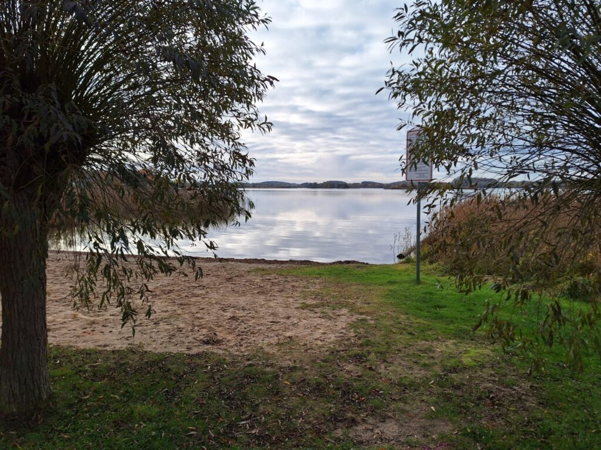

Alles, was Ihren Urlaub noch schöner macht – im Umkreis von 30 Kilometern
Ob gemütliches Cafe, Restaurant oder Imbiss – für jeden Geschmack ist etwas dabei.
Alles für den täglichen Bedarf – und regionale Schätze zum Mitnehmen.
Ob am Wasser, auf dem Rad oder zu Fuß – hier wird Ihr Urlaub zum Erlebnis.

Sandstrand, Beachvolleyball, Klettergerüst und flacher Einstieg. Gelegentlich geöffneter Kiosk von Knaufi’s Cafe.
Die Uckermark ist ein Paradies für Radfahrer. In Prenzlau gibt es einen Fahrradverleih.
Feldsteinkirchen, historische Stadtmauer in Fürstenwerder und das Dominikanerkloster in Prenzlau.
In den umliegenden Dörfern finden Sie Hofläden mit hervorragenden regionalen Lebensmitteln.
Eindrücke aus der Uckermark und vom Großen See.